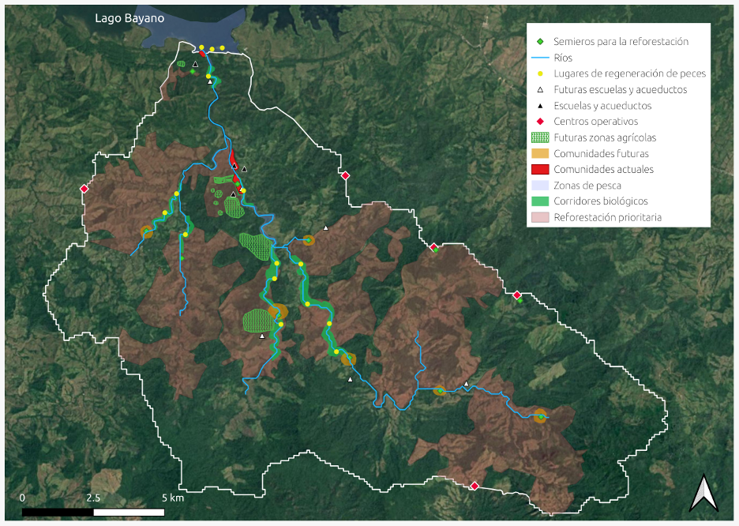

Indigenous-guided approaches to biocultural mapping & ecosystem modeling
Addressing Shifting Baseline syndrome and supporting local forest recovery targets in the Majé hydrological reserve of Panama
Project description
Areas governed and conserved by Indigenous peoples and local communities are foundational to preserving the conditions necessary for life on Earth.
To protect the integrity of these territories, there is a need to develop management plans that align with local community goals, and a need for relevant historical baselines to inform these goals.
The integration of Indigenous knowledge with technical, scientific approaches could help support community values associated with different biological,
physical, and cultural aspects, and help improve meaningful planning for the future.
In collaboration with the Centre for Indigenous Conservation and Development Alternatives (CICADA), we aim to do exactly this: we aim to support the Majé Emberá Drüa community's ongoing territorial governance through an integrative approach that bridges Indigenous knowledge systems with contemporary scientific modeling and geospatial analysis.
So far, via the financial support of the QCBS Knowledge-to-Action grant, our project has produced several tangible outputs that directly support the Majé Emberá Drüa community's territorial governance:
- Co-produced GIS layers documenting both historical changes within the territory (inundation, deforestation, fires) and community-based plans for future projects (reforestation, new schools, tourist sites and paths). These layers have been compiled into comprehensive maps (see Figure) that serve as both planning tools and documentation for the community's land claim process.
- Georeferenced dataset of biocultural keystone species within the territory , generated from extensive transect surveys conducted by community knowledge keepers. This dataset provides unprecedented documentation of the territory's ecological diversity through an Indigenous lens.
- Integrated species distribution analysis that combines traditional ecological knowledge with scientific modeling to inform restoration planning. This analysis helps identify areas of highest priority for reforestation based on both scientific predictions and cultural significance.
- Knowledge exchange infrastructure through training sessions and participatory research methodologies that strengthen intergenerational knowledge transmission while building community capacity to utilize contemporary mapping and modeling tools.
As we move forward, we will continue to support the Majé Emberá Drüa community's ongoing work by:
- Incorporating additional aspects of local knowledge (particularly fire history) into our integrated analysis
- Further refining species distribution models to support the multi-year watershed restoration project
- Developing educational materials that facilitate intergenerational knowledge transmission
- Supporting the inclusion of these findings in the community's Plan de Ordenamiento and land title claim

Figure: Map of GIS layers delineated under the guidance of community leaders Mauricio and Lazaro Mecha at the PRISM workshop, November 2024. Printouts of this map were distributed to community members.
Leads: Shriram Varadarajan, Carmen Umana-Kinitzki, Colin Scott, Brian Leung
Publications: To follow